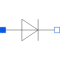
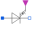

IdealSemiconductorIdeal semiconductor |

|
Information
This information is part of the Modelica Standard Library maintained by the Modelica Association.
This is an ideal semiconductor which is
open (off), if it is reversed biased (voltage drop less than 0)
closed (on), if it is conducting (current > 0).
This is the behaviour if all parameters are exactly zero.
Note, there are circuits, where this ideal description
with zero resistance and zero conductance is not possible.
In order to prevent singularities during switching, the opened
semiconductor has a small conductance Gon
and the closed semiconductor has a low resistance Roff which is default.
The parameter Vknee which is the forward threshold voltage, allows to displace
the knee point
along the Gon-characteristic until v = Vknee.
Please note:
In case of useHeatPort=true the temperature dependence of the electrical
behavior is not modelled.
Parameters (5)
| useHeatPort |
Value: false Type: Boolean Description: =true, if heatPort is enabled |
|---|---|
| T |
Value: 293.15 Type: Temperature (K) Description: Fixed device temperature if useHeatPort = false |
| Ron |
Value: 1e-5 Type: Resistance (Ω) Description: Forward state-on differential resistance (closed resistance) |
| Goff |
Value: 1e-5 Type: Conductance (S) Description: Backward state-off conductance (opened conductance) |
| Vknee |
Value: 0 Type: Voltage (V) Description: Forward threshold voltage |
Connectors (3)
| p |
Type: PositivePin Description: Positive electrical pin |
|
|---|---|---|
| n |
Type: NegativePin Description: Negative electrical pin |
|
| heatPort |
Type: HeatPort_a Description: Conditional heat port |
Extended by (3)
|  |
Modelica.Electrical.Analog.Ideal Ideal GTO thyristor |
|
Modelica.Electrical.Analog.Ideal Ideal thyristor |
|
|
Modelica.Electrical.Analog.Ideal Ideal diode |